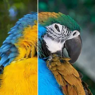

Kanaaltoewijzing (RGB)

Bouwt elk kleurkanaal opnieuw op uit een ander kanaal van de laag, voor valse kleuren of om luminantie naar alfa te verplaatsen.
Instellingen
| Instelling | Type | Bereik | Standaard |
|---|---|---|---|
| R | Keuze | Rood, Groen, Blauw, Alfa, Luminantie, Nul, Vol | Rood |
| G | Keuze | Rood, Groen, Blauw, Alfa, Luminantie, Nul, Vol | Groen |
| B | Keuze | Rood, Groen, Blauw, Alfa, Luminantie, Nul, Vol | Blauw |
| A | Keuze | Rood, Groen, Blauw, Alfa, Luminantie, Nul, Vol | Alfa |